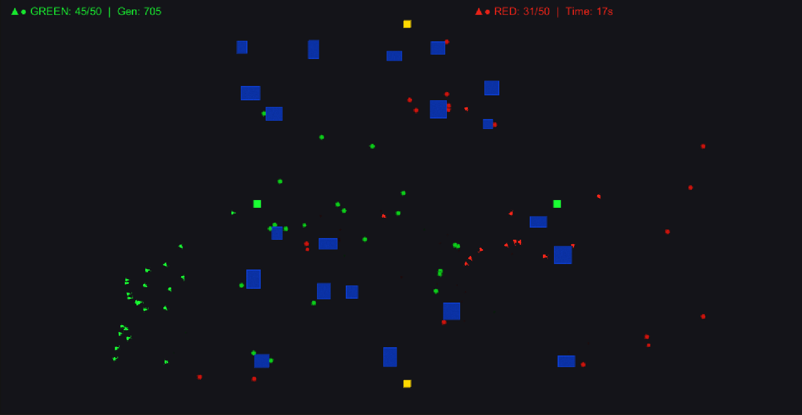

Archer vs Assassin — AI Battle Training System
A Unity 2D symmetric combat training system where 100 AI units battle on a 120×80 battlefield. Powered by genetic algorithms and neural networks (48→48→7), each generation selects the best-performing archer and assassin, clones their brains, and mutates them for the next round.
Highlights: team vision sharing, cover-based tactics, ammo logistics (10 arrows + 4 supply points), focus-fire coordination, assassin bait mechanics, exploration grid with fog-of-war, anti-regression best-ever tracking, and atomic JSON save/load with crash recovery.